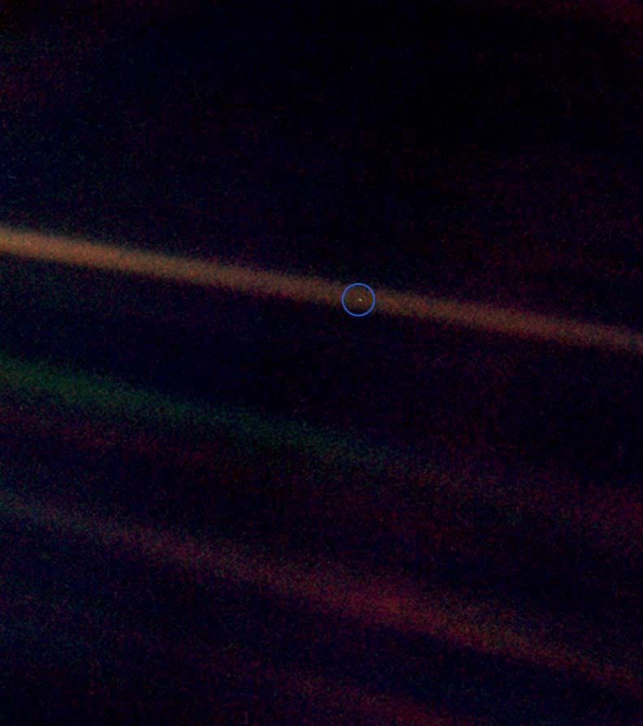

在1990年2月14日，正当时旅行者1号太空船刚完成其首要任务之际，美国天文学家卡尔·萨根说服美国国家航空航天局，
让控制中心发出指令，指示太空船向后看以拍摄它所探访过的行星。美国国家航空航天局最终从这个动作中编译出60帧照片，
辑成了一幅太阳系全家福。当中一张照片刚好把地球摄于镜内。地球在这张从40亿英里外（64亿公里外）拍摄的照片中，
只是在粒状照片里的一个渺小“暗淡蓝点”来。照片使用了一台窄角度的相机于黄道之上32°拍摄，并使用了蓝色、绿色和紫色的滤光镜。
因为相对于阔角度相机来说，窄角度相机可用来拍摄在值得研究的地点上的一些微细特征。当中地球的大小只占整张照片的0.12像素。照片中的色彩条纹是阳光在镜头里产生的光斑所致。
萨根说，从阿波罗8号任务里拍摄得到的著名地球上升（或称地出）照片，可看到整个地球从月球上方冒出，
驱使人类退后一步看到地球其实只是这个浩瀚宇宙的一个角落。为了更加体现这一点，
萨根说是他推动了让旅行者在这个太阳系边缘的优越位置拍摄一张地球的照片。而且太过靠近太阳的话会损害太空船上的光学镜头。
旅行者亦曾替金星、木星、土星、天王星和海王星拍了类似的照片，构成了一幅太阳系全家福。
而水星因为太过接近太阳而没被拍摄，火星就因为太阳光线影响了太空船上的镜头而拍不到。
在1996年5月11日的一个学位颁授典礼上，萨根博士透露了从这张照片得到的深层启示。而他的学生，现今的美国天文学家奈尔·德葛拉司·泰森也在其接续当初萨根《宇宙》的纪录片《宇宙时空之旅》中引用了这段话：
From this distant vantage point, the Earth might not seem of any particular interest. But for us, it's different.
Consider again that dot. That's here. That's home. That's us. On it everyone you love, everyone you know,
everyone you ever heard of, every human being who ever was, lived out their lives.
我们成功地（从外太空）拍到这张照片，细心再看，你会看见一个小点。再看看那个光点，
它就在这里。那是我们的家园，我们的一切。你所爱的每一个人，你认识的每一个人，
你听说过的每一个人，曾经有过的每一个人，都在它上面度过他们的一生。
The aggregate of our joy and suffering, thousands of confident religions, ideologies, and economic doctrines,
every hunter and forager, every hero and coward, every creator and destroyer of civilization, every king and
peasant, every young couple in love, every mother and father, hopeful child, inventor and explorer, every
teacher of morals, every corrupt politician, every "superstar," every "supreme leader," every saint and sinner
in the history of our species lived there – on a mote of dust suspended in a sunbeam.
我们的欢乐与痛苦聚集在一起，数以千计的自以为是的宗教、意识形态和经济学说，所有的猎人与强盗、
英雄与懦夫、文明的缔造者与毁灭者、国王与农夫、年轻的情侣、母亲与父亲、满怀希望的孩子、
发明家和探险家、德高望重的教师、腐败的政客、超级明星、最高领袖、
人类历史上的每一个圣人与罪犯，都住在这里——一粒悬浮在阳光中的微尘。
The Earth is a very small stage in a vast cosmic arena. Think of the rivers of blood spilled by all those
generals and emperors so that in glory and triumph they could become the momentary masters of a fraction of a
dot. Think of the endless cruelties visited by the inhabitants of one corner of this pixel on the scarcely
distinguishable inhabitants of some other corner. How frequent their misunderstandings, how eager they are to
kill one another, how fervent their hatreds.
在浩瀚的宇宙剧场里，地球只是一个极小的舞台。想想所有那些帝王将相杀戮得血流成河，
他们的辉煌与胜利，曾让他们成为光点上一个部分的转眼即逝的主宰；想想栖身于这个点上的某个角落的居民，
对别的角落几乎没有区别的居民所犯的无穷无尽的残暴罪行，他们的误解何其多也，他们多么急于互相残杀，
他们的仇恨何其强烈。
Our posturings, our imagined self-importance, the delusion that we have some privileged position in the universe,
are challenged by this point of pale light. Our planet is a lonely speck in the great enveloping cosmic dark. In
our obscurity– in all this vastness– there is no hint that help will come from elsewhere to save us from
ourselves.
我们的心情，我们的妄自尊大，我们在宇宙中拥有某种特权地位的错觉，都受到这个苍白光点的挑战。
在庞大的包容一切的暗黑宇宙中，我们的行星是一个孤独的斑点。由于我们的低微地位和广阔无垠的空间，
没有任何暗示，从别的什么地方会有救星来拯救我们脱离自己的处境。
The Earth is the only world known, so far, to harbor life. There is nowhere else, at least in the near future, to
which our species could migrate. Visit, yes. Settle, not yet. Like it or not, for the moment, the Earth is where
we make our stand. It has been said that astronomy is a humbling and character-building experience. There is
perhaps no better demonstration of the folly of human conceits than this distant image of our tiny world. To me,
it underscores our responsibility to deal more kindly with one another and to preserve and cherish the pale blue
dot, the only home we've ever known.
有人说过，天文学令人感到自卑并能培养个性。除了这张从远处拍摄我们这个微小世界的照片，大概没有别的更好办法可以揭示人类妄自尊大是何等愚蠢。
对我来说，这强调说明我们有责任更友好地相处，并且要保护和珍惜这个淡蓝色的光点——这是我们迄今所知的惟一家园